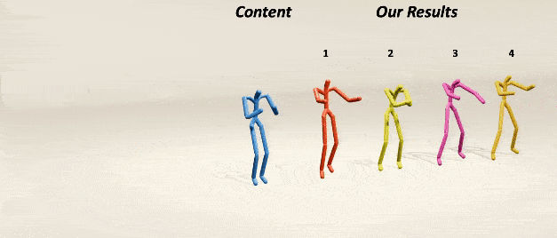
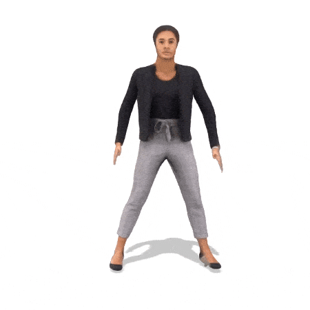
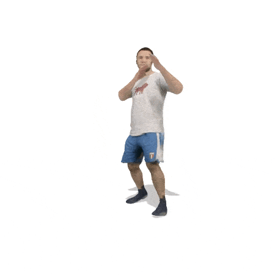

|
Chuan Guo Research Scientist Snap Research New York City, NY guochuan5513 at gmail.com [GitHub] [Google Scholar] [Linkedin] [Download CV] |
I am a research scientist at Snap Research. My research interests are in generative AI for digital human performance and character animation, focusing on 3D avatar animation, motion synthesis/stylization, and human-scene/object interaction. I earned my Ph.D. from the University of Alberta, advised by Prof.Li Cheng. Previously, I had two-year research experience in the Multimedia Group at Institute of Computing Technology, Chinese Academy of Sciences. I received my bachelor's degree in Software Engigeering from Jilin University.
🔥 Our team is hiring research interns on human interaction, motion synthesis and character animation. I am also open to academic collaboration. Contact me if you are interested.
News 🔈
[Jan 2025] 🔥🔥🔥 We are running the workshop of human motion generation (HuMoGen) at CVPR 2025. Paper submissions are welcome.[Feb 2025] I am invited for a talk about generative motion modeling in discrete space at Northeastern University.
[Jan 2025] Two works (InterMask and MotionDreamer) are accepted to ICLR 2025! Congratulations to Yilin and Gohar!.
[July 2024] Our work on Hand Grasp Generation was accepted to ECCV Workshop 2024.
[July 2024] Our work on 3D Gaussian splatting diffusion was accepted to ECCV 2024.
[May 2024] I joined Snap Research as a Research Scientist.
[Feb 2024] Our MoMask was accepted to CVPR 2024.
[Jan 2024] I have successfully defended my PhD theis.
[Jan 2024] Our work on generative motion stylization was accepted to ICLR 2024.
[Dec 2023] I was invited for a talk about human action analysis at Amii AI Seminar.
[Dec 2023] Our work, MotionMix, working on weakly-supervised 3D human motion generation was accepted to AAAI 2024.
[Dec 2023] Check out our new state-of-the-art motion generation models, MoMask.
[July 2023] Our work on 3D human motion generation via text-music intergration (TM2D) was accepted to ICCV 2023.
[July 2023] I was awarded the J Gordin Kaplan Graduate Student Award.
[Apr 2023] I was invited for a talk at Computer Vision Meetup.
[Feb 2023] I was awarded the Alberta Innovate Graduate Scholarship.
[Dec 2022] I was invited for a talk at AI TIME.
Publications
[*] indicates equal contribution. ✝ denotes corresponding author.

|
A Survey on Human Interaction Motion Generation
Kewei Sui, Inwoo Hwang, Anindita Ghosh, Jian Wang, Chuan Guo✝ In ArXiv, 2025. [Paper] [Webpage] |

|
SceneMI: Motion In-betweening for Modeling Human-Scene Interaction
Inwoo Hwang, Bing Zhou✝, Young Min Kim, Jian Wang, Chuan Guo✝ In ArXiv, 2025. [Paper] [Webpage] |
|
MotionDreamer: One-to-More Motion Synthesis with Localized Generative Masked Transformer
Yilin Wang, Chuan Guo, Yuxuan Mu, Muhammad Gohar Javed, Xinxin Zuo, Li Cheng, Xinxin Zuo, Hai Jiang, Juwei Lu In ICLR, 2025. [Paper] [Webpage] |
|
|
InterMask: 3D Human Interaction Generation via Collaborative Masked Modelling
Muhammad Gohar Javed, Chuan Guo, Li Cheng, Xingyu Li In ICLR, 2025. [Paper[ArXiv]] [Webpage] [Bibtex] [Code] Star |
|

|
ControlMM: Controllable Masked Motion Generation
Ekkasit Pinyoanuntapong, Muhammad Usama Saleem, Korrawe Karunratanakul, Pu Wang, Hongfei Xue, Chen Chen, Chuan Guo, Junli Cao, Jian Ren, Sergey Tulyakov In ArXiv, 2024. [Paper[ArXiv]] [Webpage] [Bibtex] [Code] Star |
|
RegionGrasp: A Novel Task for Contact Region Controllable Hand Grasp Generation
Yilin Wang, Chuan Guo, Li Cheng, Hai Jiang In ECCV Workshop, 2024. [Paper[ArXiv]] [Bibtex] |
|
|
GSD: View-Guided Gaussian Splatting Diffusion for 3D Reconstruction
Yuxuan Mu, Xinxin Zuo, Chuan Guo, Yilin Wang, Juwei Lu, Xiaofeng Wu, Songcen Xu, Peng Dai, Youliang Yan, Li Cheng In ECCV, 2024. [Paper[ArXiv]] [Webpage] [Bibtex] |
|
|
MoMask: Generative Masked Modeling of 3D Human Motions
Chuan Guo*, Yuxuan Mu*, Muhammad Gohar Javed*, Sen Wang, Li Cheng In CVPR, 2024. [Paper[ArXiv]] [Webpage] [Demo] [Bibtex] [Code] Star |
|
|  |
Generative Human Motion Stylization in Latent Space
Chuan Guo*, Yuxuan Mu*, Xinxin Zuo, Peng Dai, Youliang Yan , Juwei Lu, Li Cheng In ICLR, 2024. [Paper] [Webpage] [Bibtex] [Code] |
|
MotionMix: Weakly-Supervised Diffusion for Controllable Motion Generation
Nhat M. Hoang, Kehong Gong, Chuan Guo, Michael Bi Mi In AAAI, 2024. [Paper] [Webpage] [Bibtex] [Code] |
|
|
TM2D: Bimodality Driven 3D Dance Generation via Music-Text Integration
Kehong Gong, Dongze Lian, Heng Chang, Chuan Guo , Xinxin Zuo, Zhihang Jiang, Xinchao Wang In ICCV, 2023. [Paper[ArXiv]] [Webpage] [Bibtex] [Code] Star |
|

|
TM2T: Stochastic and Tokenized Modeling for the Reciprocal Generation of 3D Human Motions and Texts
Chuan Guo , Xinxin Zuo, Sen Wang, Li Cheng In ECCV, 2022. [Paper[ArXiv]] [Webpage] [Video] [Data] [Bibtex] [ Paper Reading] [Code] Star |
|
Generating Diverse and Natural 3D Human Motions from Text
Chuan Guo , Shihao Zou, Xinxin Zuo, Sen Wang, Wei Ji, Xingyu Li, Li Cheng In CVPR, 2022. [Paper] [Webpage] [Supp] [Video] [Bibtex] [Code] Star [Data] Star |
|
|
Human Pose and Shape Estimation from Single Polarization Images
Shihao Zou, Xinxin Zuo, Sen Wang, Yiming Qian, Chuan Guo, Li Cheng In TMM, 2022. [Paper] [Paper(ArXiv)] [Bibtex] |
|
|
Promoting Saliency from Depth: Deep Unsupervised RGB-D Saliency Detection.
Wei Ji, Jingjing Li, Qi Bi, Chuan Guo, Jie Liu, Li Cheng In ICLR, 2022. [Paper] [Code] [Bibtex] |
|
|   |
Action2video: Generating Videos of Human 3D Actions
Chuan Guo, Xinxin Zuo, Sen Wang, Xinshuang Liu, Shihao Zou, Minglun Gong, Li Cheng In IJCV, 2021. [Paper] [Paper(ArXiv)] [Video] [Bibtex] |

|
EventHPE: Event-based 3D Human Pose and Shape Estimation
Shihao Zou, Chuan Guo, Xinxin Zuo, Sen Wang, Pengyu Wang, Xiaoqin Hu, Shoushun Chen, Minglun Gong, Li Cheng In ICCV, 2021. [Paper] [Code] [Bibtex] |

|
Action2Motion: Conditioned Generation of 3D Human Motions
Chuan Guo, Xinxin Zuo, Sen Wang, Shihao Zou, Qingyao Sun, Annan Deng, Minglun Gong, Li Cheng In MultiMedia, 2020. [Paper] [Webpage] [Video] [Bibtex] [Code] Star |

|
DEAN: Learning Dual Emotion for Fake News Detection on Social Media Chuan Guo, Juan Cao, Xueyao Zhang, Kai Shu, Huan Liu In ArXiv, 2019. [Paper] |
Academic Activities
Organizer of Human Motion Generation (HuMoGen) Workshop on CVPR 2024-2025.Reviewer for ICCV 2023, 2025, SIGGRAPH 2024-25, ICML 2024-2025, CVPR 2023-25, Eurographics 2022,2025, ICLR 2024-2025, AAAI 2023-2025, NeurIPS 2023-24, SIGGRAPH Asia 2024, ECCV 2024, ICML 2024, MultiMedia 2024, ACCV 2022, EMNLP 2021, ACML 2020-2021
Reviewer for Transactions on Pattern Analysis and Machine Intelligence (TPAMI)
Reviewer for IEEE Transactions on Circuits and Systems for Video Technology (TCSVT)
Reviewer for IEEE Robotics and Automation Letters (RA-L)
Reviewer for IEEE Transactions on Multimedia (TMM)
Reviewer for IEEE Transactions on Neural Networks and Learning Systems (TNNLS)
Reviewer for Pattern Recognition (PR)
Reviewer for Machine Learning
Selected Honors & Awards
J Gordin Kaplan Graduate Student Award, University of Alberta, 2023Alberta Innovate Graduate Scholarship, Alberta Province, 2023
Alberta Graduate Excellence Scholarship, Alberta Province, 2021
Qihoo 360 Scholarship, Qihoo 360 Technology Co. Ltd., 2016
Undergraduate National Scholarship, Chinese Ministry of Education, 2015
Excellent Student of Jilin University, Jilin University, 2015
ECCV 2022 Student Travel Grant
CVPR 2022 Student Travel Grant
Outstanding National Undergraduate Innovative Training Project, Jilin University, 2016
First-Prize in Jilin Provincial Mathematical Contest in Modeling, Jilin Provincial Miniistry of Education, 2015
Misc
I'm from Chengdu, China.This website template is borrowed from here.